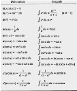
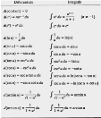
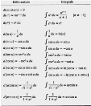

This course is a college-level class. In AP Calculus AB, we studied
the application of differentiation and integration and how to analyze
a graph by determining a graph's limits, asymptotes, and continuity.
Each class we are given a lecture on one or more sections of our textbook.
After the lecture, we are given problems to practie and homework to do.
A lot of the class tieme consists of doing mathematical problems and asking \
questions. We are also give tests and quizzes to test our abilities.
Below are some images relating to this class.
